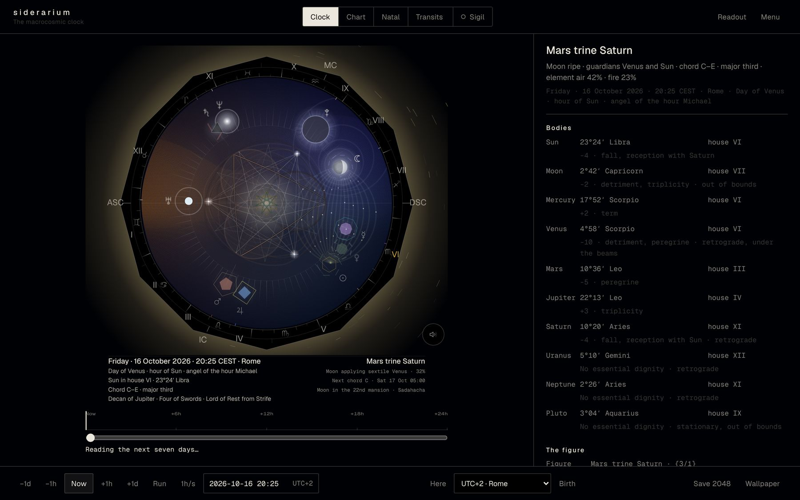
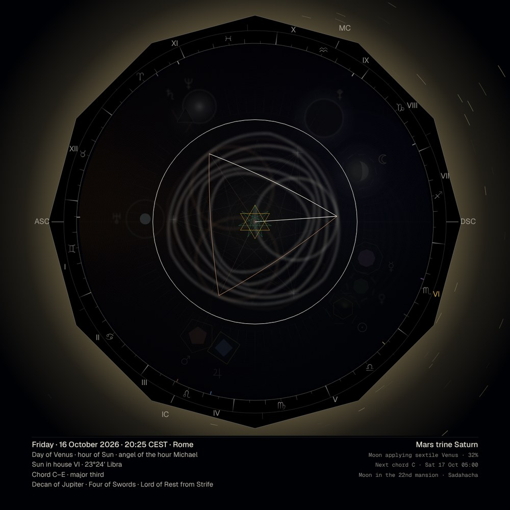
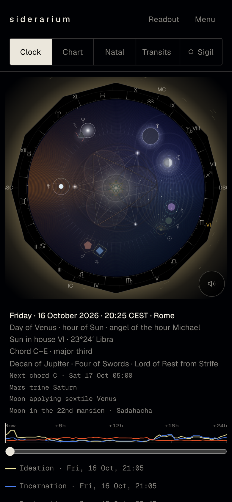
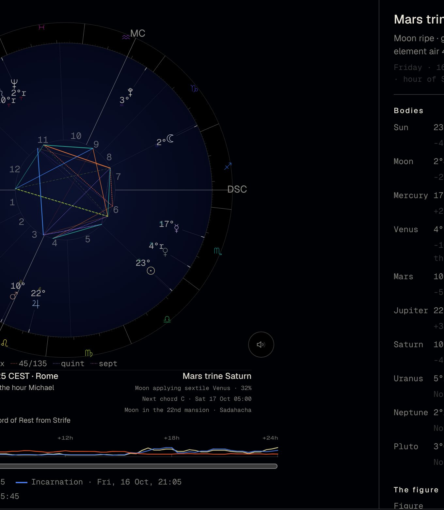
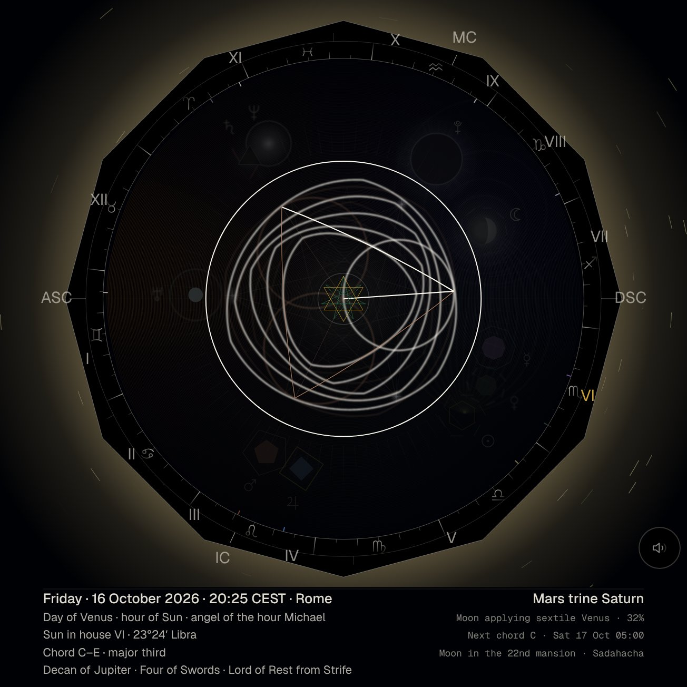
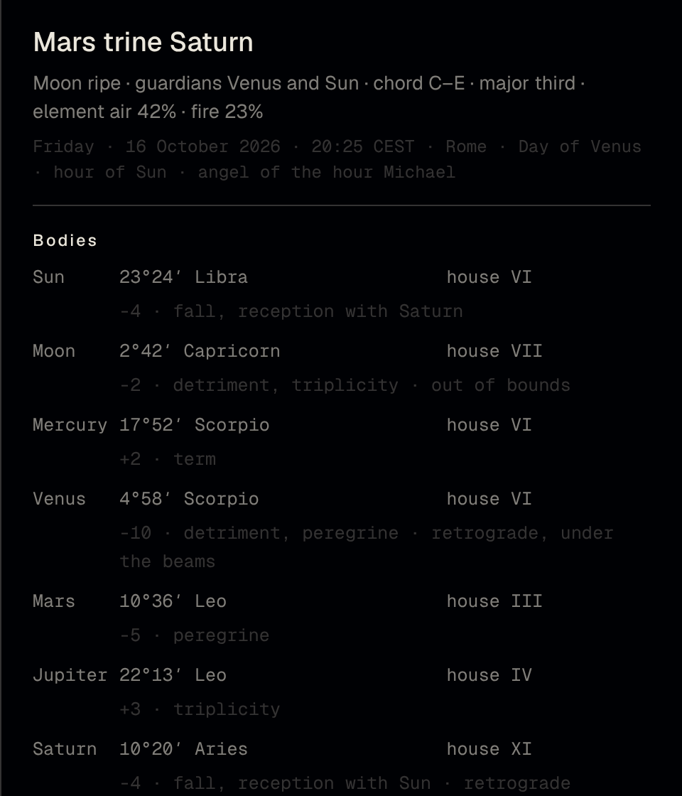
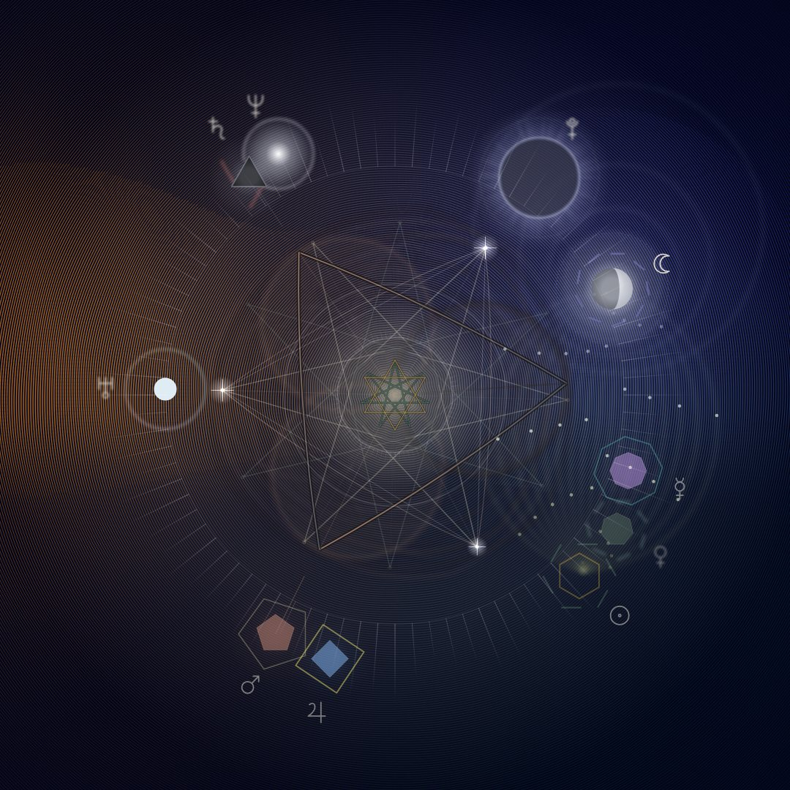

The macrocosmic clock.
Siderarium draws the sky of the present moment as a living mandala: the astrological energy of the hour as colour, geometry and chord. A live, synesthetic timetable for practitioners of planet and energy work.
The sky over Rome, now.
What it is
The moment and its vibration.
Through synesthesia we wanted an instrument that conveys, in a multi-sensory experience, the astrological energy of the hour. The dial captures the moment and its vibration, so that it can be seen, heard, kept as an image and returned to.
For practitioners of the Arts it is also a timing tool: the light at the centre, the guardians of the hour and the windows of the coming day show when a working finds the sky ready.
Every mark can be traced. Planetary positions come from an ephemeris accurate to the arcminute. A fixed set of rules turns them into colour, number, geometry and sound, and the readout names the rule behind each one.


How it works
How the sky becomes a figure.
Classical astrology reads the angles between planets as aspects: the trine at 120°, the square at 90°, the sextile at 60°. Kepler showed that these angles are the divisions of the circle by its regular polygons.
Siderarium takes that literally. An aspect of k·360/n is drawn as the star polygon {n/k}: a trine becomes a triangle, a square a square, a quintile a pentagram. The ruling aspect gives the central figure; the others stand fainter behind it.
Each planet brings its number, its tincture and its light. The mandala that results is the key to the present moment: a pattern that exists only now.
Ephemeris
Positions of the Sun, Moon and planets for this minute, at your place, with houses on the local horizon.
Aspects as divisions of the circle
Each angle between two bodies is read against the regular polygons, as Kepler did, with the orbs of tradition.
Number, tincture, light
Saturn the three, the Sun the six, Mercury the eight; gold, silver and the King scale of colours; a glow that follows dignity and strength.
Timing
When the sky is ready.
The centre of the dial answers one question: is this a good hour to work? Three indicators sit there, drawn from the Renaissance tradition of elections.
Ripe, open, unripe or void of course. The light at the pole warms, cools or goes dark with it.
The ruler of the day and the ruler of the planetary hour, as their stars. The angel of the hour is named in the caption.
The next twenty-four hours scanned for the moments of ideation, incarnation and destruction. Tap one to travel there.
Enter your birth date once, kept on your device. The transits view shows which figures of your birth chart the sky is setting off, and whether harmony or strife prevails.

Views
One sky, four readings.

Chart
The same moment as a conventional wheel: houses, degrees, aspect lines, for the astrologer's eye.

Sigil
The figure isolated in solid ink, with no field and no glow, to be copied onto paper or metal.

Readout
Bodies and dignities, the figure and its orb, the chord, the decans and their cards, the hours of the day. Every mark, traceable.

Lineage
A cosmic clock, in a long line of them.
The Antikythera mechanism geared the Sun, the Moon and the eclipses two thousand years ago. Su Song's tower turned a celestial globe in Kaifeng in 1092. Giovanni Dondi's Astrarium gave Padua one dial for each of the seven planets in 1364, and the Prague Orloj has shown day, twilight and night on an astrolabe since 1410.
Modern haute horlogerie kept the thread alive in the astronomical complications of Oechslin, van der Klaauw, Patek Philippe and Vacheron Constantin. Siderarium borrows their functional discipline: a dial on which every mark earns its place, a chapter ring, applied Roman numerals, the Moon shown in its phase, and nothing that does not read.
For whom
Astrologers, magicians, angel workers.
Electional astrology
The Moon's verdict at a glance: ripe, open, unripe or void of course, with Lilly's tolerances. The applying aspect, the combustion, the Via Combusta. The next twenty-four hours scanned for the windows of ideation, manifestation and destruction, and the thinning of the veil.
Planetary magic and talismans
The ruler of the day and the planetary hour, computed from sunrise and sunset at your place, with the angel of the hour named: Michael, Gabriel, Raphael, Anael, Cassiel, Samael, Sachiel. Dignities, the decans and their images, the figure of the moment as a sigil to copy onto paper or metal.
Angel work and energy work
A live, synesthetic timetable: the hour's guardians, the lunar mansion, the chord of the sky to hear while you work. Every mark is traceable to its rule in the readout, nothing is a black box.
Questions
Asked often.
The day from sunrise to sunset and the night from sunset to sunrise are each divided into twelve unequal hours, ruled in turn by Saturn, Jupiter, Mars, the Sun, Venus, Mercury and the Moon, the Chaldean order. Siderarium computes them for your exact place and names the hour's ruler and its angel.
The Moon makes no further Ptolemaic aspect to a classical planet before leaving her sign. Tradition holds that nothing begun then comes to much in the world; Siderarium shows the void, Lilly's tolerable exceptions, and the hours before and after it.
Yes, among other things. Enter a birth once, the town found by name from a world gazetteer, and the chart is kept on your device. The transits view shows which of your natal figures the sky is setting off now, and whether harmony or strife prevails.
Free. No account, no cookies, no analytics, no server: the sky is computed in your browser and your birth data never leave your device. It installs from the browser on iPhone, Android, Mac and Windows and works offline.
Positions come from an ephemeris accurate to about one arcminute, with Regiomontanus houses by default and equal or Placidus on request. The about page in the app lists every rule and its source.
Get the app
Siderarium installs from the browser.
There is nothing to download from a store. Open the app once, then add it to your device; it keeps working offline and updates itself.
iPhone and iPad
- Open Siderarium in Safari.
- Tap Share, then Add to Home Screen.
- Open it from the home screen; it runs full screen.
Android
- Open Siderarium in Chrome.
- Tap the menu, then Install app (or Add to Home screen).
- Find it with your other apps.
Mac and Windows
- Open Siderarium in Chrome or Edge.
- Click the install icon at the right of the address bar.
- It opens in its own window, in the Dock or the Start menu.
Native installers for macOS and Windows are in preparation.
Live wallpaper
The bare dial, no controls, filling any screen and moving with the sky. Give this address to Lively Wallpaper on Windows or to Plash on macOS:
https://siderarium.com/app/?wall=1
Add &place=rome, &place=new%20york or any city of the app's list to fix the horizon, or your own coordinates: &lat=45.05&lon=9.69&tz=Europe/Rome&name=Piacenza. For phone wallpaper automations, a still of the sky is rendered every hour for Rome, New York and Greenwich: